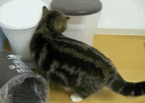
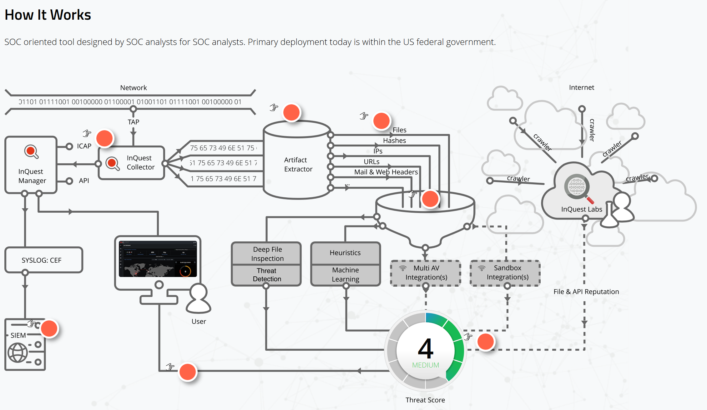

Drago mi je sto sam ovde

Before we begin
Switch from CRUD to Event-Sourcing is tough
Event-Sourcing isn't for your whole application
Learning Objectives:
- What is Event Sourcing
- Rules to Follow
- briefly describe the data structures: Events, Projections, Read Models, CQRS
- 3 legacy projects that benefited from Event Sourcing
Event Sourcing
The fundamental idea of Event Sourcing is that of ensuring every change to the state of an application is captured in an event object, and that these event objects are themselves stored in the sequence they were applied for the same lifetime as the application state itself.
Martin Fowler
Events and Listeners

An Event
What happened?
BookWasCheckedOut
What do I need to remember about it?
(book, patron, date)
Attributes
- Save only what you need to preserve
- The rest can be looked up
(book id, patron id, date)
Rules for Events
- Usually named as past-tense verbs
- RARELY changed
- Never deleted
- Has attributes that are values
- not model, object, collection, or aggregate root

Don't store objects

If We Stored Objects in an Event...
Events rarely change
- The part of the code that will change is most likely the result that follows that event.
- The structure of the resulting data is more likely to change than the thing that happened


Reasons to use Events
- State transitions are important
- We need an audit log, proof of the state we are currently in
- The history of what happened is more important than the current state
- Events are replayable if behavior in your application changes
Event Class
<?php
namespace Library\Events;
use Library\Support\Event;
class BookWasCheckedOut
{
/**
* @var DateTime
*/
public $checkoutDate;
/**
* @var int
*/
public $patronId;
/**
* @var int
*/
public $bookId;
public function __construct(DateTime $checkoutDate, PatronId $patronId, BookId $bookId)
{
$this->checkoutDate = $checkoutDate;
$this->patronId = $patronId;
$this->bookId = $bookId;
}
/**
* @return array
*/
public function serialize()
{
return [
'checkout_date' => $this->$checkoutDate->toString(),
'patron_id' => $this->patronId->toNative(),
'book_id' => $this->bookId->toNative(),
];
}
/**
* @param array $data
*
* @return static
*/
public static function deserialize($data)
{
return new BookWasCheckedOut(
DateTime::createFromFormat('j-M-Y', $data['checkout_date']),
PatronId::fromNative($data['patron_id']),
BookId::fromNative($data['book_id'])
);
}
}
Connecting the events
- An event is created only after validation
- directly in a controller 'checkout' method
- using a Check Out Book Command and Handler

Event Store
- Domain-specific database
- Based on a Publish-Subscribe message pattern

Projector
<?php
namespace Library\ReadModel;
use Library\Events\BookWasCheckedIn;
use Library\Events\BookAddedToBookshelf;
use App\Support\ReadModel\Replayable;
use App\Support\ReadModel\SimpleProjector;
use Illuminate\Database\Schema\Blueprint;
use Illuminate\Database\Connection;
class BookshelfProjector extends SimpleProjector implements Replayable
{
/**
* @var Connection
*/
private $connection;
/**
* @var string table we're playing events into
*/
private $table = 'proj_bookshelf';
public function __construct(Connection $connection)
{
$this->connection = $connection;
}
public function beforeReplay()
{
$builder = $this->connection->getSchemaBuilder();
$builder->dropIfExists('proj_bookshelf');
$builder->create('proj_bookshelf_tmp', function (Blueprint $schema) {
$schema->string('book_id');
$schema->string('book_title');
$schema->string('book_author');
$schema->string('status');
$schema->string('checkout_date');
$schema->string('patron_id');
$schema->primary('book_id');
});
$this->table = 'proj_bookshelf_tmp';
}
public function afterReplay()
{
$builder = $this->connection->getSchemaBuilder();
$builder->dropIfExists('proj_bookshelf');
$builder->rename('proj_bookshelf_tmp', 'proj_bookshelf');
$this->table = 'proj_bookshelf';
}
/**
* @param BookWasCheckedOut $event
*/
public function applyBookWasCheckedOut(BookWasCheckedOut $event)
{
$bookshelfItem = BookshelfItem::where('id', $event->bookId);
$book->status = 'Checked Out';
$book->checkout_date = $event->checkoutDate;
$book->patron_id = $event->patronId;
$book->save();
}
/**
* @param BookAddedToBookshelf $event
*/
public function applyBookAddedToBookshelf(BookAddedToBookshelf $event)
{
$bookshelfItem = new BookshelfItem();
$bookshelfItem->setTable($this->table);
$bookshelfItem->bookId = $event->bookId;
$bookshelfItem->bookTitle = $event->bookTitle;
$bookshelfItem->bookAuthor = $event->bookAuthor;
$bookshelfItem->status = 'on shelf';
$bookshelfItem->save();
}
}
A set of event handlers that work together to build and maintain a table to be accessed by the read model.
Read Model

Read Model
<?php
namespace Library\ReadModel;
use Carbon\Carbon;
use Illuminate\Database\Eloquent\Model;
/**
* @codeCoverageIgnore
*/
class Bookshelf extends Model
{
protected $table = 'proj_bookshelf';
public $incrementing = false;
public $timestamps = false;
public static function lookupLoansFor($patronId)
{
return static::where('patron_id', $patronId)->get();
}
public function lookupAvailableBooks()
{
return static::where('status', 'on shelf')->get();
}
public function lookupOverdueBooks()
{
return static::where('checkout_date', '<', date('Y-m-d', strtotime('-7 days')))->get();
}
}
CRUD: update
public function update(Request $request, $id)
{
// our default update method
// validate inputs
$Book = Book::findOrFail($id);
$Book->update($request->all());
return $Book;
}
CRUD Checkout
public function checkOutBook(Request $request, $id)
{
// altered the update method
// validate inputs
$Book = Book::findOrFail($id);
$Book->update('status' => 'checked out',
'patron' => $request->patronId);
return $Book;
}

CRUD Checkout
public function checkOutBook(Request $request, $id)
{
// altered the update method
// validate book can be checked out
$event = new BookWasCheckedOut($request->bookId,
$request->patronId,
time());
}
CQRS
Command and Query Response Segregation
- Command is any method that mutates state
- Query is any method that returns a value
- These methods become part of Services
- When parts of your application no longer fit a CRUD model
- Should only be used on specific portions of a system, not the system as a whole
CRUD to CQRS
public function update(Request $request)
{
// $request has book id, patron id
try {
$command = new CheckOutBook($request->bookId, $request->patronId);
$this->bookLendingService->handleCheckOutBook($command);
} catch (InvalidUserException $e) {
return response()->json("Not authorized to request enrollment.", Response::HTTP_FORBIDDEN);
} catch (BookUnavailableException $e) {
return response()->json("Book was not available to be checked out", 400);
return $Book;
}
<------ dynamic command handler ------>
private function handle(Command $command)
{
$method = $this->getHandleMethod($command);
if (! method_exists($this, $method)) {
return;
}
$this->$method($command);
}
private function getHandleMethod(Command $command)
{
return 'handle' . class_basename($command);
}
<-------- handle check out book command --------->
public function handleCheckoutOutBook(CheckOutBook $command)
{
$book = Book::findOrFail($command->bookId);
$patron = Patron::findOrFail($command->patronId);
if (!$book->isAvailable()) {
throw new BookUnavailableException();
}
if (!$patron->isAuthorized()) {
throw new InvalidUserException();
}
//record the event
$this->record(
new BookWasCheckedOut(date("Y-m-d H:i:s"),
$patron->getId(),
$book->getId())
);
}
Command Handler
A command handler receives a command and brokers a result from the appropriate aggregate. "A result" is either a successful application of the command, or an exception.
should affect one and only one aggregate
Command Handler
- Validate the command on its own merits.
- Validate the command on the current state of the aggregate.
- If validation is successful, create an event(s)
- Attempt to persist the new events. If there's a concurrency conflict during this step, retry or exit.
Optimize
- all commands go into a WriteService
- all queries go into a ReadService
- to optimize your application for reads and writes
- Separate the load from reads and writes allowing you to scale each independently.
- If your application sees a big disparity between reads and writes this is very handy.
- Uses a separate model for all queries
Task-based UI
- Track what the user is doing and push forward commands representing the intent of the user
- CQRS does not require a task based UI (DDD does)
- CQRS used in a CRUD interface, makes creating separated data models harder
Scholarships
- replaced in pieces
- added DDD & ES & CQRS beside complex framework spaghetti
- separation of concerns
- cleaner history and reports of what had been done


Dependency Injection
- add slide from bootstrapping through controllers and rearrange
Legacy
- this was an example of replacing the code in pieces
- could have replaced only one part or a few
- really powerful to see which parts of your application could benefit from event sourcing
- and finding the simplest way to implement
Student Enrollment Process
- rewrote
- ES to follow the process
- status drop-down versus events
Diagram

Session Threats Report
- multiple daemons running parts of code and the UI consumes the results of the analysis
- complex DB queries
- reports are slow to generate on-demand
Event: SessionDiscovered
- after validation to determine whether we have a valid session, we log a new event
new SessionDiscovered( attributes we need to know )
Event: SessionDiscovered
- session id
- start time
- protocol
- source ip
- destination ip
- source port
- destination port
Event: SessionScored
- session id
- threat contributor
- score
Event: FileScored
- after validation that a file has matched a signature, we log a new event
new FileScored( attributes we need to know )
Event: FileScored
- file id
- session id
- integration
- score
- signature that found it
Event: FileRescored
- after validation that a file has matched a signature and that it has been scored before\n- we log a new event
new FileRescored( attributes we need to know )
Event: FileRescored
- file id
- session id
- integration
- new score
- signature that found it
Projection: Session
- listens for SessionDiscovered events
- creates a new row in a table with the session details and a null score
- listens for SessionScored events
- finds the session in the table and updates the score and score contributor
Projection: Report for Top Threats by Hash
- listens for FileScored and FileRescored Events
- looks up details of file by the file id
- adds a row to table with
- file id
- file md5 hash
- the filename
- file type
- the score
- signature that scored it
- source ip
- destination ip
- protocol
Read Model: Top Threats
methods:
top 10 threats by the file hash
- this excludes hits I'm not allowed to see by the signature that did the scoring
- gets a current hit count of only the records I can see
top threats by file type
- top threats by source/destination ip pairs
- top threats by protocol
Good Stuff!
- works well in our environment where we have multiple applications doing different things
- full audit log of what has happened in our environment
- the results of those events can be optimized for read to shorten the time to retrieve data
- separate the logic of what an event means based on context and purpose
- only display results that a user is allowed to see
- flexible to change, our interpretation of events can change, and we can rebuild projections without losing the full history
Signatures
- history of changes
- past scores/score history
Rescans and history from rescans
- what can we see?
Efficiency
- With events written, can process them for multiple contexts
- Speed up scans by delaying the writes to the report
- Speed up reports by building from events/optimized for read